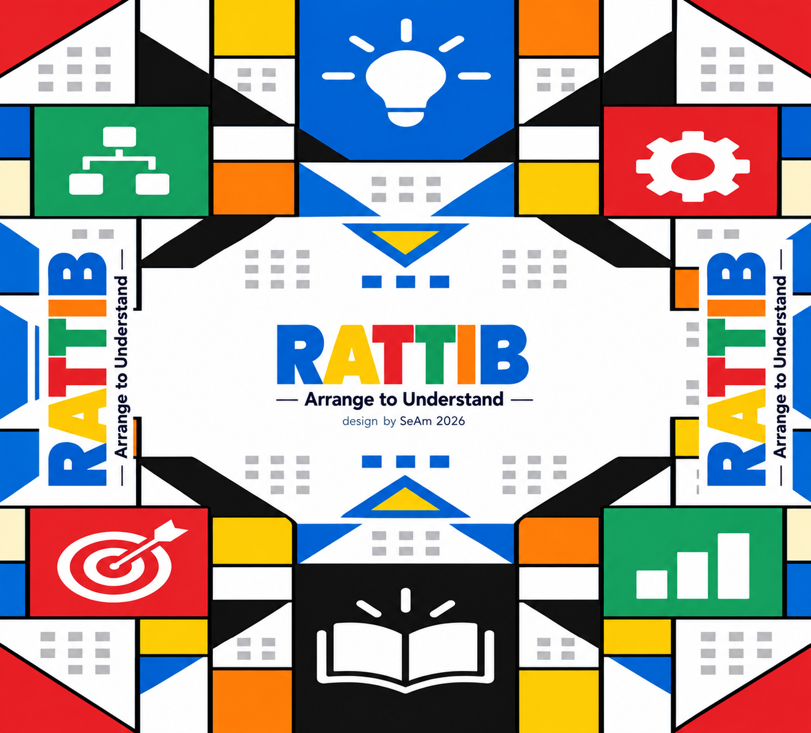

Find where ideas belong.
Place cards in their sections and arrange the development stages.
A Framework for Learning Game Design Principles.
8 sections · 56 cards · 168 keyword explanations.
Start with your cards. Build understanding here.

Follow the route from A to H. Select a section to explore its focus and try a reflection prompt with your physical cards.
Explore the concepts in A–H, then practise recognising cards and applying their relationships. Use the activities on your own or as a starting point for group discussion.
Place cards in their sections and arrange the development stages.
Use the keywords to recognise a concept, with more clues whenever you need them.
Compare related ideas, respond to design situations and reflect on your reasoning.
56 cards · 3 activity modes · Practice records stay in your browser.
Lay out your physical cards from A to H. Start with a section and arrange the concepts in a way that makes sense to you.
Discuss why one idea belongs beside another. Use a familiar game to show how those concepts work together.
Write your explanation, compare perspectives with your group, and revisit your arrangement as your understanding grows.
What connection did you discover today? Pick two concepts from your cards and explain how they influence each other in a game you know.
RATTIB is a card-based learning framework. Use this companion alongside your physical deck, individually or in a classroom discussion.
Your cards are the starting point. Your connections are the learning.